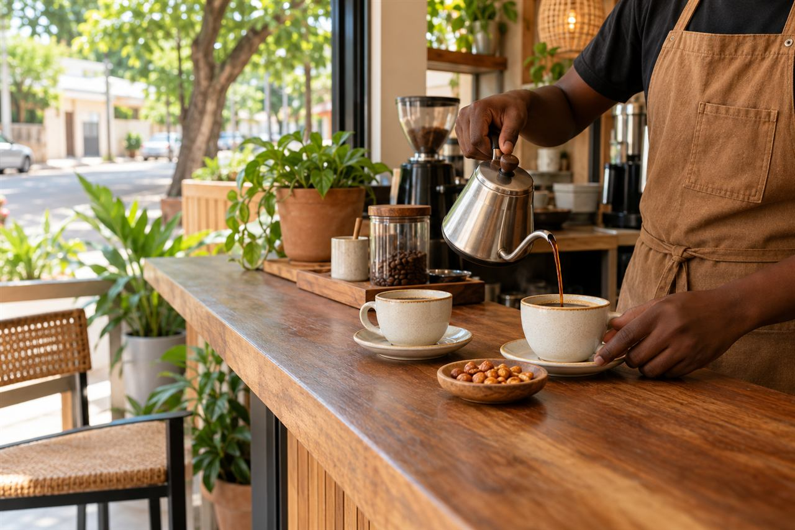
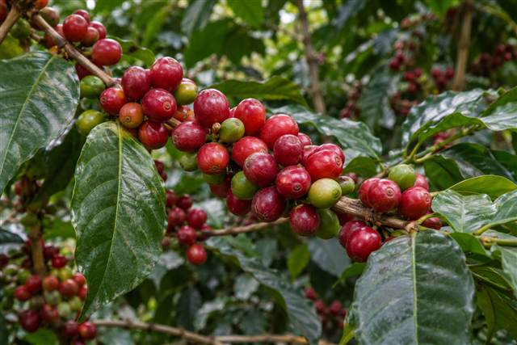
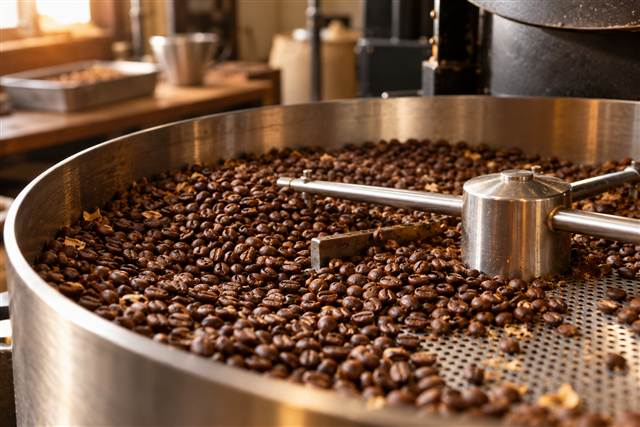
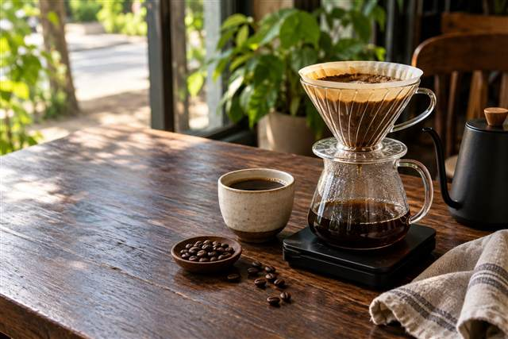

Quel type d’affirmation ?
Donnée de production, fait botanique, recommandation de préparation, santé, témoignage ou visuel : chaque type requiert sa propre source.
Les sources sont choisies selon le type d’affirmation. Les chiffres locaux, les conseils de santé et les visuels documentaires demandent des preuves adaptées.
Donnée de production, fait botanique, recommandation de préparation, santé, témoignage ou visuel : chaque type requiert sa propre source.
On vérifie auteur, titre, date, périmètre, unité, méthode et page. Une page d’accueil d’organisme ne valide pas à elle seule un chiffre précis.
Les données manquantes ou historiques sont présentées comme telles. « Non documenté ici » ne veut pas dire « inexistant ».
Statistiques et documentation sur l’économie mondiale du café ; vérifier les années et définitions avant comparaison.
Consulter l’OIC → Agriculture & post-récolteRessources techniques agricoles ; chaque publication doit être citée individuellement.
Consulter la FAO → Données nationalesPoint d’entrée institutionnel pour rechercher des publications statistiques béninoises datées.
Consulter la DSA → Préparation & qualitéRéférences professionnelles sur la préparation et l’évaluation ; les protocoles et éditions doivent être explicités.
Consulter la SCA → Santé publiqueRéférences de santé publique. Les contenus Café Bénin ne remplacent pas un avis médical.
Consulter l’OMS → Évaluation des risquesÉvaluations scientifiques des risques et synthèses ; distinguer classification de danger et niveau de risque individuel.
Consulter le CIRC →
Illustration générée pour Café Bénin. Aucun établissement ni territoire réel n’est représenté.

Illustration générée ; espèce, pays et date non déterminés. Ne constitue pas une preuve de culture au Bénin.

Illustration générée d’une scène fictive, sans atelier ou torréfacteur identifié.

Illustration générée à visée pédagogique. Elle ne documente ni une méthode locale ni un café particulier.
Indiquez le lien ou la référence exacte, la date et le passage concerné. Pour une photo, précisez l’auteur, le lieu, les personnes reconnaissables, l’autorisation de publication et la licence.
Le contenu peut être proposé par e-mail ou via le dépôt public. Toute correction retenue doit être documentée et republiée sur GitHub.